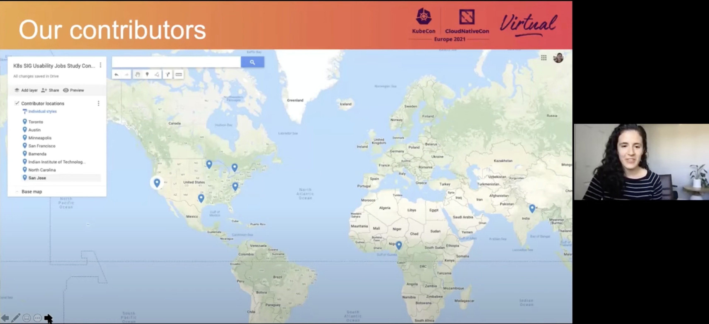
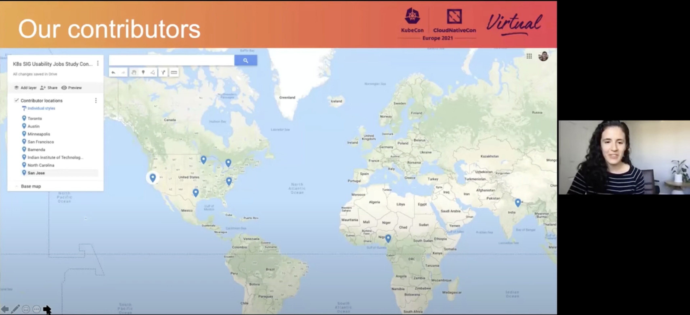

The Kubernetes Special Interest Group for Usability
A UX-focused community within the Kubernetes open source project.

The Kubernetes Special Interest Group for Usability
In 2018, having just returned to IBM, I flew to Seattle along with the rest of the Kubernetes design team to attend KubeCon North America, the flagship conference of the Cloud Native Computing Foundation. During the conference, I noticed UX cited as a big barrier of adoption to using Kubernetes. “Made by infrastructure engineers for infrastructure engineers” as they say. As a UX Designer working on the Kubernetes Design team, I knew there was something I could do to help, I just didn’t know what.
After the conference, a movement began to create a UX-focused Special Interest Group (SIG) within the Kubernetes open source project. Following the conversation, I became a contributor to the founding charter of the Kubernetes Special Interest Group for Usability, later serving as it’s Co-Chair, and fulfilling my long held dream of contributing to open source, something I’d wanted to do since my days as a computer science student.
I realized that SIG Usability filled an important need in the Kubernetes open source project for contributors of diverse skill sets that might think contributing to open source is limited to those who can write code. There were many willing contributors that just needed to be enabled all while keeping flexibility to contribute on their own time given that we all have full-time jobs.
This lead me to create a contribution framework for conducting user research that allowed really anybody with an interested in better understanding Kubernetes end-users to contribute. With this framework, I led, recruited and mentored designers, researchers and developers alike from organizations such as Red Hat, the Linux Computing Foundation, Google, VMware, Apple, and Microsoft on how to contribute to open source. We conduct research with Kubernetes end-users in Asia Pacific, the Americas and Europe. Myself and several contributors received Outstanding Contribution Awards several years in a row.
Images
 

Awards
-
2021
Cloud Native Computing Foundation —
Outstanding Contributor Award
-
2020
Cloud Native Computing Foundation —
Outstanding Contributor Award